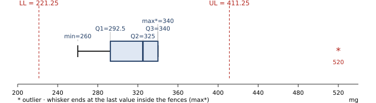

1 · Overview & descriptive statistics (Sessions 1–2, Devore Ch. 1)
Vocabulary
- Population (populasi): all measurements of interest. Size N, mean μ, variance σ². Sample (sampel): a subset. Size n, mean x̄, variance s².
- Variable (variabel: karakteristik / alat ukur) vs data (hasil pengukuran).
- Experimental unit: the object measured (person, light bulb).
- Uni-/bi-/multivariate: 1, 2, or more variables per unit.
Types of variables
- Qualitative / categorical (non angka): gender, major, hair colour, ethnic group. A numeric code (1 = M, 2 = F) is still qualitative, and a student ID is qualitative too.
- Quantitative (angka):
- Discrete (bilangan bulat): countable values (number of phones, semester, # of units).
- Continuous: any value in an interval (body temperature 36,2°, GPA, time, weight).
Graphs
- Qualitative: bar chart, pie chart; frequency table: item | freq | relative freq (= f/n) | percent.
- Quantitative: dotplot, stem-and-leaf, (relative-frequency) histogram, time series (line chart).
- Histogram classes: width ≈ (max − min) / #classes, rounded up to a convenient number. Example: (70 − 26)/6 = 7.33 → width 8, starting at 25.
Stem-and-leaf (batang-daun): (1) sort small → large (urutkan); (2) split into stem | leaf, e.g. tens | ones; (3) give a key, e.g. "6 | 5 = 65" or for 1 decimal: "18 | 6 = 18.6".
Board example: 17.2, 18.6, 18.8, 18.8, 20.1, 21.3, 23.5 →
17|2 18|688 19| 20|1 21|3 22| 23|5
Shapes (bentuk distribusi)
| Mound-shaped, symmetric | mean ≈ median |
| Skewed right (long right tail, a few unusually large values) | mean > median |
| Skewed left (long left tail, a few unusually small values) | mean < median |
| Bimodal | two local peaks |
Measurement scales (skala pengukuran): Nominal · Ordinal · Interval · Ratio
Quiz 1 question 1 asked for both the variable type and the scale of every variable. Answer with two labels for each variable, e.g. "kuantitatif kontinu, rasio".
| Scale | What it means | Allowed | Examples (Computer Engineering) |
|---|
| Nominal | Categories with no order. Numbers used as labels are still nominal. | count, mode, =, ≠ | jenis OS, jenis sensor, jenis mikrokontroler, protokol komunikasi, merek, status ON/OFF, gagal/tidak gagal, NIM, ID perangkat |
| Ordinal | Categories with a natural order, but the gaps between them are not equal or measurable. | + median, <, >, ranking | kondisi Baik/Sedang/Rusak, suhu CPU Normal/Tinggi, grade A/B/C, tingkat kepuasan 1–5, prioritas rendah/sedang/tinggi, peringkat |
| Interval | Numbers with equal gaps, but zero is arbitrary (0 does not mean "none"). Differences make sense, ratios do not. | + mean, SD, differences | suhu in °C or °F, tahun (calendar year), jam/tanggal (clock time) |
| Ratio | Numbers with equal gaps and a true zero (0 = none). "Twice as much" makes sense. | everything, including CV and ratios | waktu respons, kecepatan, daya (W), tegangan (V), amplitudo (mV), berat, panjang, jumlah perangkat/kegagalan, persentase error, akurasi (%), suhu in Kelvin |
Decision steps
- Are the values words or labels? → qualitative / kategorik.
Is there a natural order? Yes → ordinal. No → nominal.
- Are the values numbers you can add and average? → quantitative / numerik.
Counted (0, 1, 2 …) → discrete. Measured → continuous.
- Does 0 mean "none of it"? Yes → ratio. No (0°C still has heat) → interval.
"Tingkat …" (level of …) is ambiguous. "Tingkat akurasi 97,5%" is a number, so it is ratio. "Tingkat akurasi tinggi/sedang/rendah" is ordinal. When unsure, write the assumption, e.g. "diasumsikan dalam persen (%) → rasio".
Counts are ratio, not interval. "Jumlah kegagalan" = 0 means no failures, a true zero. Temperature in °C is the classic interval example.
| Answer template | Variable | Type (jenis) | Scale (skala) | Reason (one line) |
|---|
| Write one row per variable | Waktu respons sensor (ms) | Kuantitatif kontinu | Rasio | measured; 0 ms = no time |
| Jenis protokol komunikasi | Kualitatif | Nominal | labels (I2C, SPI, UART) with no order |
The full worked answer for all 15 Quiz 1 variables is on {{p:R-LA1}}.
Measures of centre (ukuran pemusatan)
Mean: \(\bar x=\dfrac{\sum x_i}{n}\) (sample); \(\mu=\dfrac{\sum x_i}{N}\) (population)
Median: the middle value after sorting. Its position is \(0.5(n+1)\). If the position ends in .5, average the two neighbours.
Mode (modus): the most frequent value. A data set can have 2 modes (bimodal) or none.
Example (slides). 2, 4, 9, 8, 6, 5, 3 → sorted 2 3 4 5 6 8 9, position 0.5(8) = 4th → median = 5.
2, 4, 9, 8, 6, 5 → sorted 2 4 5 6 8 9, position 3.5 → median = (5+6)/2 = 5.5.
Robustness (board). 2, 3, 4, 5, 6: x̄ = 4, median 4. Add an extreme value 1000: x̄ = 170, median = 4.5. The median is robust (stabil), so use it for skewed data.
Measures of variability (ukuran penyebaran)
Range (jangkauan) R = max − min.
\[\sigma^2=\frac{\sum (x_i-\mu)^2}{N}\quad\text{(population)}\]
\[s^2=\frac{\sum (x_i-\bar x)^2}{n-1}=\frac{\sum x_i^2-\frac{(\sum x_i)^2}{n}}{n-1}\quad\text{(sample)}\]
\(s=\sqrt{s^2}\) is always taken positive (≥ 0). It is in the original units, while s² is in squared units.
We divide by n − 1 for a sample because x̄ is estimated from the same data. This makes s² a better (unbiased) estimate of σ².
Example (slides): petals 5, 12, 6, 8, 14.
n = 5, Σx = 45, x̄ = 9, Σx² = 25+144+36+64+196 = 465
\(s^2=\dfrac{465-45^2/5}{4}=\dfrac{465-405}{4}=15\), \(s=3.873\). Range = 14 − 5 = 9.
STAT 1-VAR: enter 5, 12, 6, 8, 14 → sx = 3.8730 → sx² = 15. Do not use σx (= 3.4641) for a sample.
Range approximation: R ≈ 4s to 6s, so s ≈ R/4 (a rough check).
Coefficient of variation (koefisien variasi, CV)
\[CV=\frac{s}{\bar x}\times 100\%\quad(\text{sample})\qquad CV=\frac{\sigma}{\mu}\times100\%\quad(\text{population})\]
CV is the SD as a percentage of the mean. It has no unit, so you can compare spread between data sets with different units or very different means.
Smaller CV = more stable / consistent (lebih stabil, lebih konsisten).
Use it only for ratio-scale data with a positive mean.
Example. Sensor A: x̄ = 34 mV, s = 18.36 mV → CV = 18.36/34 × 100% = 54%. Sensor B: x̄ = 30 mV, s = 3 mV → CV = 10%. Sensor B is far more stable.
Use the sample SD s (calculator sx), unless the question says the data are a whole population. Show both numbers in the formula: "CV = 18,3555 / 33,9333 × 100% = 54,09%".
Rough guide often used in engineering reports: CV below 10% is low, 10–30% moderate, above 30% high variability. State it as an interpretation, not a rule.
Chebyshev (Tchebysheff) vs the Empirical rule
Chebyshev, any shape: at least \(1-\dfrac{1}{k^2}\) of the values lie within k SDs of the mean (k ≥ 1).
k = 2 → at least 3/4 = 75%; k = 3 → at least 8/9 ≈ 88.9%.
To find k: \(k=\dfrac{\text{distance from mean}}{s}\).
Empirical rule, mound-shaped only: about 68% within μ ± σ, 95% within μ ± 2σ, 99.7% within μ ± 3σ.
Tails: P(above μ + 2σ) ≈ 2.5%; P(above μ + σ) ≈ 16%.
Example (slides). Task time: mean 12.8 min, SD 1.7, mound-shaped. Proportion longer than 16.2 min? 16.2 = 12.8 + 2(1.7) is 2 SDs above, so ≈ (1 − 0.95)/2 = 0.025.
Relative standing
z-score: \(z=\dfrac{x-\bar x}{s}\). |z| ≤ 2 is not unusual; |z| > 3 suggests an outlier. p-th percentile: p% of the values lie below it.
Quartiles, IQR, five-number summary
Sort the data first (urutkan). Positions (slides' rule):
\(Q_1\) at \(0.25(n+1)\) · median \(Q_2\) at \(0.5(n+1)\) · \(Q_3\) at \(0.75(n+1)\)
If a position is fractional, interpolate: position 4.75 → \(x_{(4)}+0.75\,(x_{(5)}-x_{(4)})\).
n = 15 (both Quiz 1 versions): Q1 = 4th value, median = 8th, Q3 = 12th. No interpolation needed.
\(IQR=Q_3-Q_1\)
Five-number summary (ringkasan lima angka): Min, Q1, Median, Q3, Max.
Fences (batas pencilan):
LL = \(Q_1-1.5\,IQR\) · UL = \(Q_3+1.5\,IQR\)
A value below LL or above UL is an outlier (pencilan), drawn as *.
Whiskers go to the most extreme values that are not outliers, not to the fences.
Shape: median closer to Q1 and a long right side → skewed right (mean > median). Median closer to Q3 → skewed left.
Drawing the boxplot (diagram kotak)
- Draw a number line with a scale that covers the min, max and both fences.
- Draw a box from Q1 to Q3 and a vertical line at the median.
- Compute LL and UL. Mark them with dashed lines (optional, but it shows your check).
- Draw each whisker to the last data value inside the fences.
- Mark each outlier with *.
- Write the conclusion: "Terdapat outlier: 65, 67, 75 (> UL = 36,5)" or "Tidak terdapat outlier karena semua data berada di antara LL dan UL".
Slides: sodium in 8 cheeses 260 290 300 320 330 340 340 520
Q1 position 2.25 → 292.5 · median 4.5 → 325 · Q3 position 6.75 → 340 · IQR 47.5 · LL 221.25 · UL 411.25 → 520 is an outlier, the upper whisker stops at 340.

Slides: shoe prices, n = 18 40 60 65 65 65 68 68 70 70 70 70 70 70 74 75 75 90 95. Q1 position 4.75 → 65; Q3 position 14.25 → 74 + 0.25(75 − 74) = 74.25; median 70; IQR 9.25; fences 51.125 and 88.125 → 40, 90 and 95 are outliers. (The slide gets 75.25 because its list leaves out the 40.)
Different books and calculators use different quartile rules. Use the 0.25(n+1) rule and write the position you used.